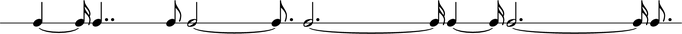
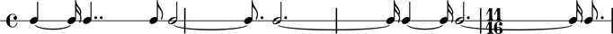
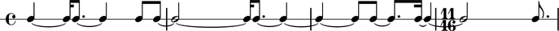

Real world examples for the impatient
Rhythms: slicing and dicing *
This example demonstrates how you can compose a sequence of notes with arbitrary durations outside a metric hierarchy (e.g. Measures) and then slice and dice the notes to have them fit a metric overlay added a posteriori.
Let us first define a set of durations from prime numbers:
abjad> durations = [5, 7, 2, 11, 13, 5, 13, 3] abjad> durations = zip(durations, [16] * len(durations)) abjad> durations [(5, 16), (7, 16), (2, 16), (11, 16), (13, 16), (5, 16), (13, 16), (3, 16)]
Let us now create a list of notes from these durations.
abjad> from abjad.tools import construct abjad> notes = construct.notes(0, durations) abjad> notes [Note(c', 4), Note(c', 16), Note(c', 8.), Note(c', 4), Note(c', 8), Note(c', 8), Note(c', 2), Note(c', 16), Note(c', 8.), Note(c', 4), Note(c', 4), Note(c', 8), Note(c', 8), Note(c', 8.), Note(c', 16), Note(c', 4), Note(c', 2), Note(c', 8.)]
Let us now put these notes inside a RhythicStaff.
abjad> staff = RhythmicStaff(notes)
As this will become part of a piece for ensemble to be conducted, we would like all the parts to have a common metric (measure) structure. We now apply a MetricGrid spanner with the desired metric sequence to our staff.
abjad> MetricGrid(staff, [(4, 4), (4, 4), (4, 4), (11, 16)])
Notice how some notes span more than one measure (i.e. they extend over the bar lines). This is a good thing because it shows that note durations and meter are treated independently. It also shows the flexibility and exactness of LilyPond's internal rhythmic model. We may not want these spanning notes in our final score, however. We may also want to show each beat by splitting notes every quarter or every half note duration. To do this we will slice the music to a second sequence of meters.
abjad> meters = [(1, 4)] * 4 + [(2, 4)] + [(1, 4)] * 6 + [(2, 4)] + [(3, 16)] abjad> metric_slice(staff, meters)
*This example reconstructs the first few measures of Stephen Lehman's Rai following the composer's own process: "I basically created a duration row, and then applied a meter to it after the fact. Then, once I started changing the distribution of prime number values over the course of the piece, I tried to make them fit in the same time span.